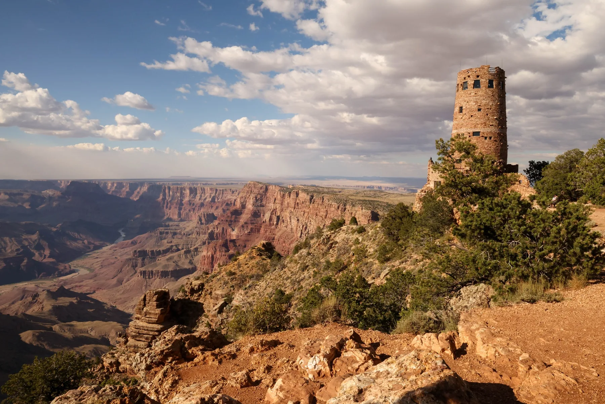
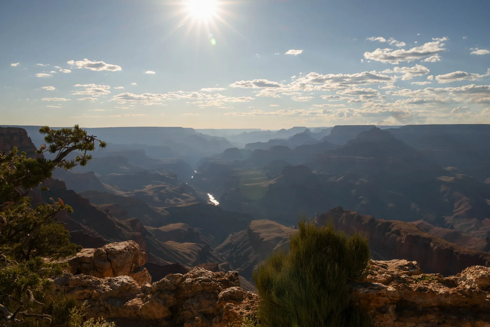
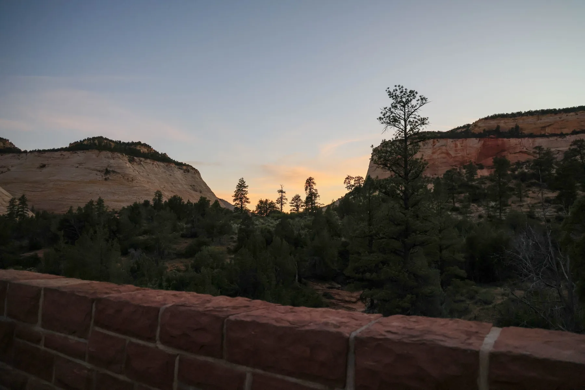
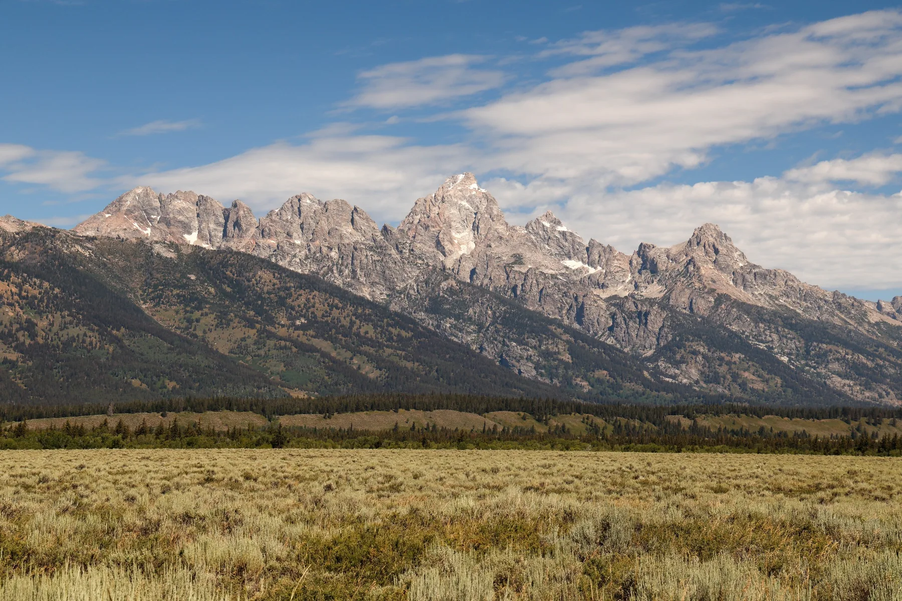
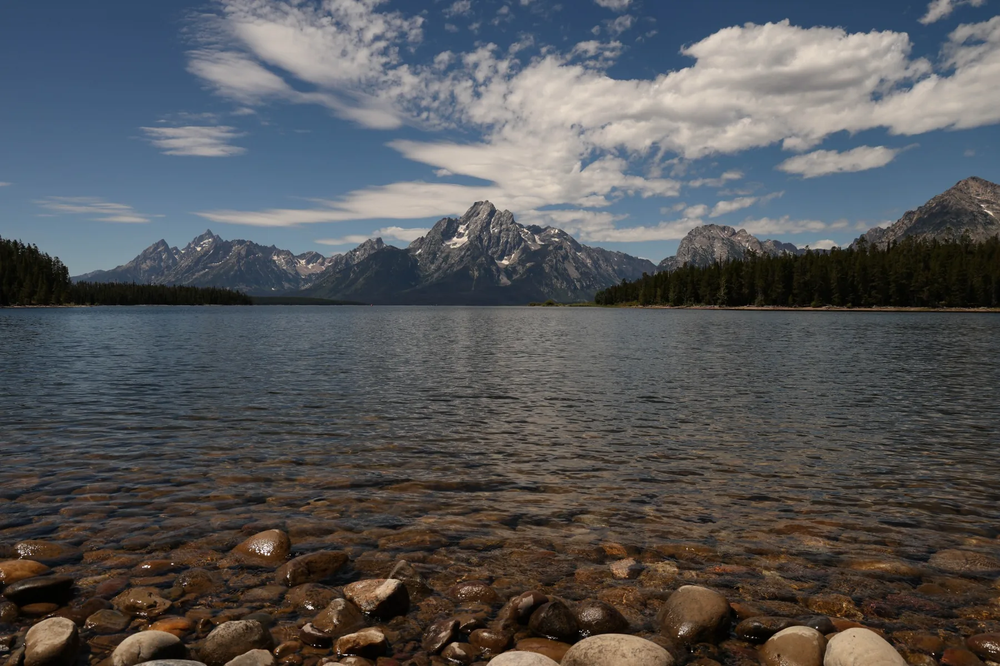
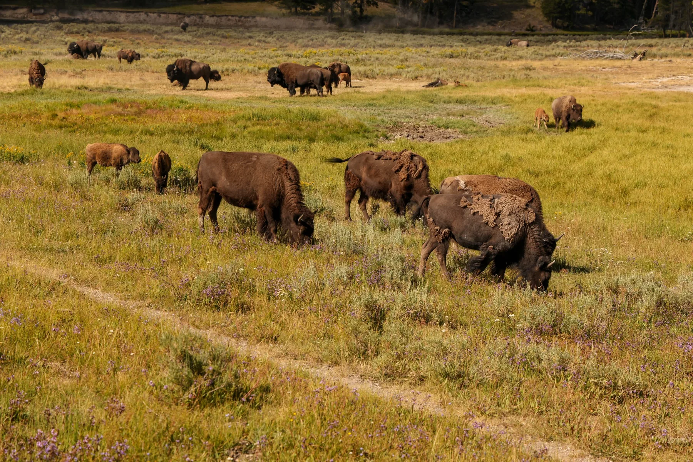
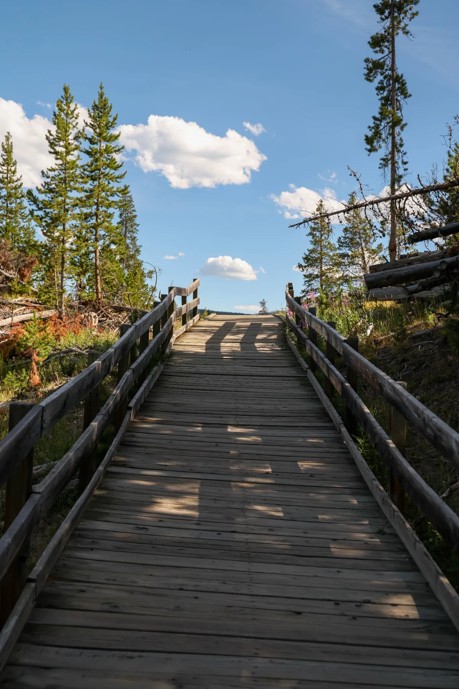
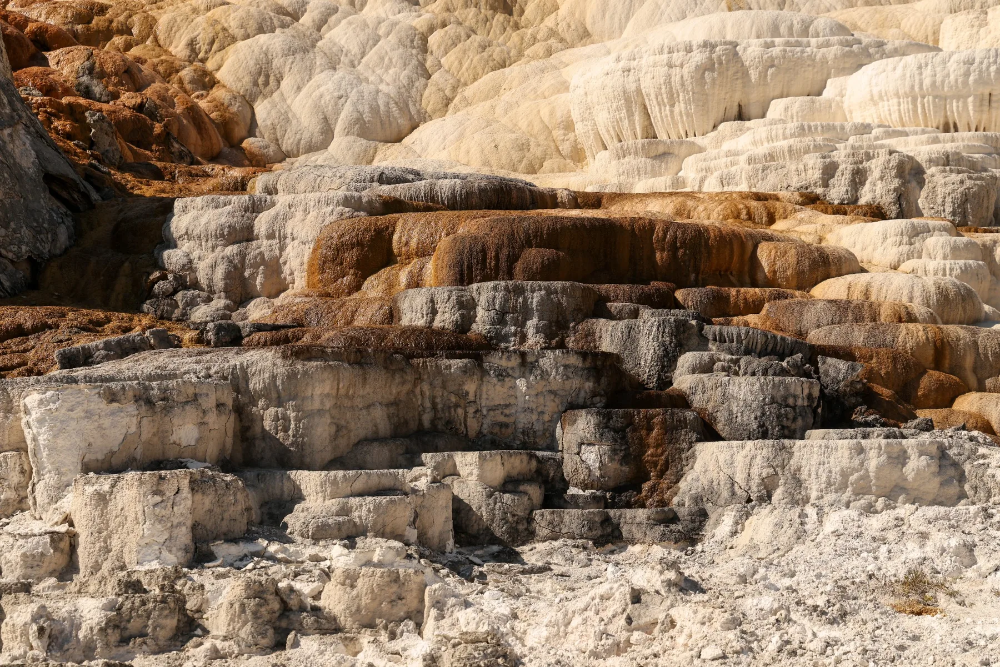
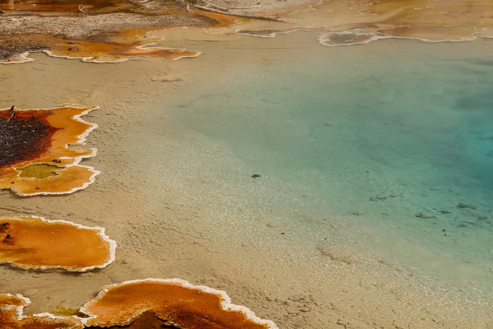
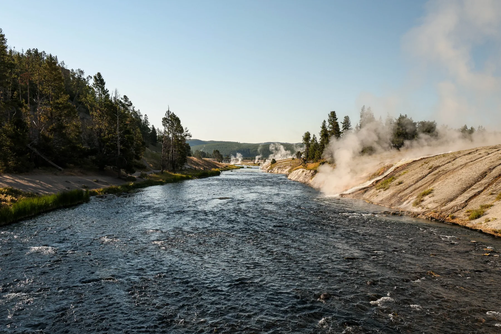

Rock climbing
I enjoy the combination of movement, problem-solving, commitment, and iteration—especially powerful cave climbing and dynamic moves.
Beyond engineering
Outside school and technical projects, I spend my time climbing, exploring the outdoors, taking photographs, and experimenting with FPV drones.
Different interests, but the same habit of paying attention, testing limits, and learning by doing.
I enjoy the combination of movement, problem-solving, commitment, and iteration—especially powerful cave climbing and dynamic moves.
I am working toward a long-term goal of visiting every U.S. national park and documenting the landscapes along the way.
Photography gives me a reason to slow down, notice composition and detail, and preserve the character of a place.
I enjoy learning to fly, exploring aerial perspectives, and combining photography with hands-on building and design.
A selection from my 2025 road trip through the Grand Canyon, Zion, Grand Teton, and Yellowstone.










I have more photography beyond this trip. This section is ready for city scenes, climbing, and everyday moments.
A National Geographic travel experience that will become a full visual project with trip details, field notes, and photographs.
The project page is ready for the story and photographs whenever you are.